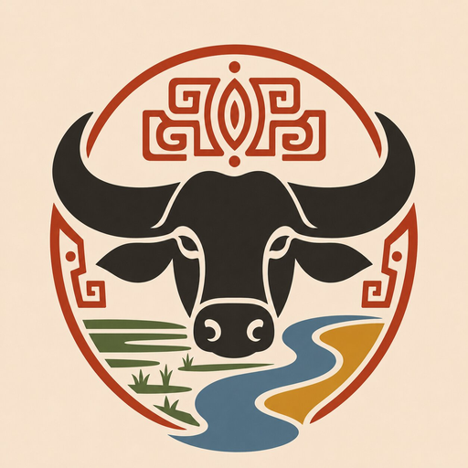

Viagens e Turismo
Paracauari
Um guia completo para explorar Soure e Salvaterra, no coração da Ilha de Marajó (PA). Reúne comércio local, atrativos, transporte e cultura em um só lugar.
- Diretório de pousadas, restaurantes, artesãos e guias, com contato direto por WhatsApp
- Praias, fazendas de búfalo e oficinas de cerâmica marajoara, com como chegar e melhor época
- Calendário de festivais, feiras e celebrações da região
- Horários e rotas de ferries, lanchas e vans entre as cidades
- Dicas de segurança, gastronomia e história da civilização marajoara
- Cadastro gratuito para donos de estabelecimentos locais